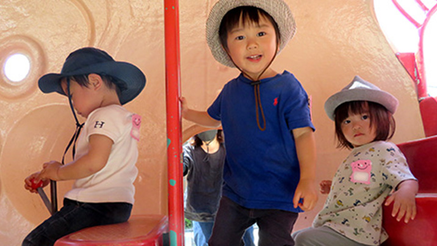
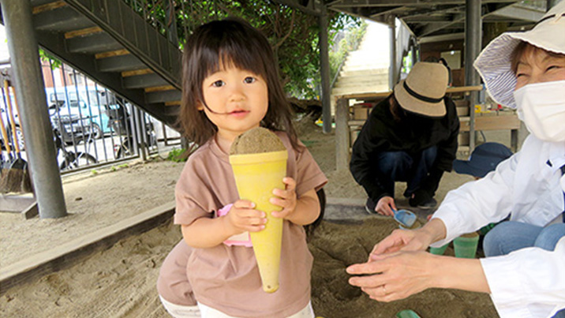
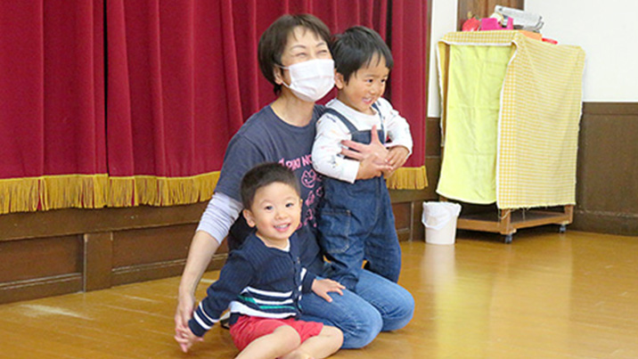
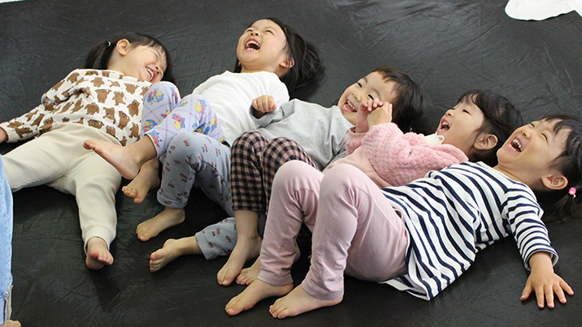
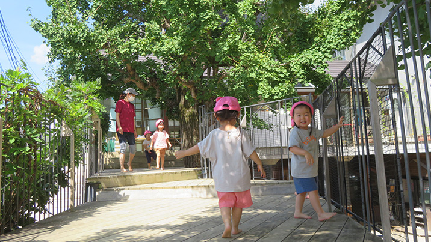
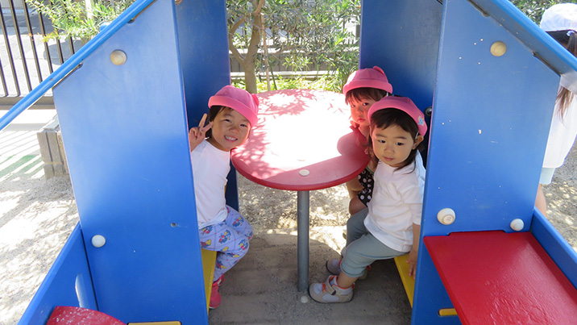
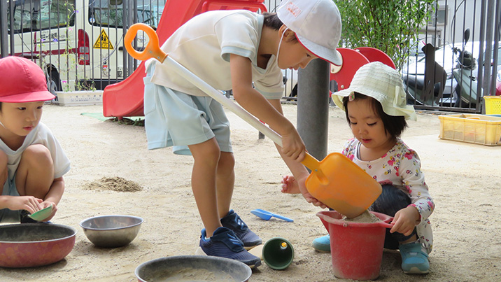

2歳から3歳と、子ども達は好奇心や自己主張が大きくなって、自分の力や思いに向き合い成長していきます。
お家の方も、「反抗期」や「いやいや期」などと言われてきたこの時代に突入し、子育ての大変さを改めて感じられるのではないでしょうか？
聖三一幼稚園ではこの特別な時代を、子ども達一人ひとりの思いと発達に寄り添い、大好きな先生とお友達と一緒に初めて出合うドキドキの発見を大切に環境を整えています。
お家の方と一緒に、ゆっくりのんびり初めての社会生活を楽しんでスタートできる様に、共に歩みます。
お家の人といっしょに入園準備！！



ももキッズは幼稚園入園に向けて、親子で楽しみながら、のんびり幼稚園に慣れ親しんで、入園準備を進めるコースです。2学期からスタートする母子分離では、年長さんが優しくサポートして一緒に遊んでくれて、縦の繋がりを体験します。このコースは受け入れ枠があれば2歳児クラス「ももプチ」に移行可能です。 又、ももキッズは聖三一幼稚園への優先入園となりますので、定員数に左右される事なく幼稚園に入園する事ができます。
週2～3回のクラスと、週5回のクラス




お友達や先生と一緒に過ごしたいという願いと、まだまだお家の方に甘えていたい思いと、どちらも大切な2歳児さんです。 バランスをとって、どちらの経験も大切に、それぞれのお子様に合わせて入園の時期をご相談致します。 ももプチでは1・2歳児さんと交流しながら3歳児~５歳児さんのお兄さん、お姉さんとも関わり合って共に大きくなります。
※週に5回のクラスは、基本就労により保育を必要とする場合のクラスです。 月・水・金は教育時間（13時15分）まで週２～３のももプチ組と一緒に過ごし、その後は、預かり保育(つくし組：基本時間は教育時間終了後から16時まで）で過ごします。延長はご相談に応じます。